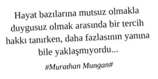

Hafıza arama motorunun ilk sayfalarına doğru ilerledikçe dizi ile ilgili olarak ne kadar çok içeriğe, duyguya, anlama sahip olduğunun farkına vardı. İlk sayfalara doğru serüven ilerledikçe diziler hakkındaki bilgiler, deneyimler, duygular ve anlamların derinliği azalıyor, ilk sayfada ise tüm bu deneyimler birer köpük halini alıyordu.
Bilgi ve anlam kirliliğinin zihinsel ve ruhsal nefes frekansını azalttığı şu günlerde dizi deneyimi yüzeyselleşirken, nasıl oluyor da bu kadar ilgi düzeyini zirvede tutuyor sorusu dişine kaçmış bir kırıntı gibiydi. Önemsizdi ama çok rahatsız ediyordu. Bir an önce cevap bulmak istiyordu.
Diziler Neden Bu Kadar Çok İzleniyordu?
Bağlantı Kurma: “Aynı benim gibi değil mi?”
“Olm aynı bizim hikâyemiz değil mi? Çok benzetiyorum kendimi bu herife...”
“Aynı acıları ben de yaşamıştım. Damdan düşenin halinden yine damdan düşen anlar”
“Polat Alemdar’ın tesbihinden aldım. Artık onun gibi racon kesebiliriz aşağı mahalle delikanlılarına...”
“Beni de aynen böyle terk etmişti hayvan...”
Aidiyet: “Ben de onlardanım”.
“Yarın herkes Kuzey Güney muhabbeti yapacak, ben de uyuz olacağım. Bari kabaca izleyip karakterlerini tanıyayım da gerektiği yerde müdahil olurum sohbete.”
“Ben de Gossip Girl izleyenlerdenim...”
“Two and a Half Men’deki her diyaloğu Feys profilimde paylaşıyorum.”
“Lostpedia’yı takip etmeyenler Lost’u izliyorum demesinler...”
Cinsellik ve Aşk Motivleri: “Keşke onunla birlikte olsaydım?”
“Kıvanç çok iyi vücut yapmamış mı amaaaaaa... Bu adam hangi dizide oynarsa oynasın izlerim.”
“Bihter’e hasta olmayan var mı aranızda? Aşk-ı Memnu’da daha iyiydi ama...”
“Pelinsu ile çıkmak istiyorsan onun izlediği tüm dizilere hâkim olmalısın, beğendiği diziler ile ilgili konuşabilmelisin, beğendiği dizi karakterleri gibi giyinmeli, yemeli içmeli ve gittikleri mekânlara gitmelisin...”
“Güney ile evlenilir, Kuzey ile yaşanır...”
“Game of Thrones, Spartacus içimdeki hayvanı uyandırıyor. Rahatlıyorum...”
“Kavak Yelleri’nde tüm arkadaş grubu birbiri ile takılıyor, bizim çocuklar da üniversitede böyle takılıyor olabilir mi?”
“Sex and The City’ye özeniyorum, önüme gelene yürüyorum.”
Ego Evreni: “Çok İyiyim!”
“Kimsenin izlemediği yabancı dizileri izliyorum, çok iyiyim...”
“Türk dizilerini asla izlemem... İzleyenleri de kesinlikle anlamıyorum. Anlamak da istemiyorum.”
“Bu kıyafeti Küçük Sırlar’ın dün akşamki bölümünde Ayşegül giymişti. Aynı yerden giyiniyoruz muhtemelen...”
“Çok sıkıldım artık evimizde dizi çekilmesinden, doğru düzgün hayatımızı yaşayamıyoruz...”
“Çıktığım çocuk Ezel’e ne kadar benziyor farkında değil misin?”
“Dizileri, kıyafetler ve mekânlar için izliyorum.”
Kırk yaşına merdiven dayamış, bekâr, yalnız yaşayan, “eğitimli insanlar tarafından çekici bulunduğunu düşünen” bir kadındı. Sosyalizm, feminizm, anarşizm, yoga, Uzakdoğu felsefesi, Taocu seks, ikebana kursları, parapsikoloji, sağlıklı beslenme, çevre duyarlılığı, yeşil politika gibi muhtelif mevzulara bulaştıktan sonra şimdi evinde nihilistçe oturuyor ve çevresindeki hemen her şeye, herkese zehirli bir dille, aşağılama dozu yüksek bir alaycılıkla yaklaşıyor.
Okumuş olduğu okullar, kitaplar, gezmiş olduğu ülkeler, deneyimlemiş olduğu tüm etkinliklerle, kendini, toplumda farklı bir yere konumlandırırken; kendisinin de yeri geldiğinde böğüre böğüre ağlayarak dizileri izliyor olmasını, hafta sonları yeme içmeden kesilerek günde bir sezon dizi bitirmesini kendine yediremiyordu.
Beslenmesine ve sporuna azami özen göstermesine rağmen, diziler; tatlı ile olan mücadelesinde kendisinin hükmen mağlup sayılmasına neden oluyordu.
Nitelikli bir sanat galerisindeki özgün bir serginin düzgün bir davetini, büzüşmüş ruhunu ferahlatmak adına reddediyor, kendini dizilerin fantastik dünyasına teslim ediyordu.
Uzun zamandan beri ilk defa, kendine uygun olarak önerilen hem yakışıklı hem de entelektüel bir erkek ile yemek için bir araya gelmişti. Karşısındaki erkek, evet yakışıklı ve entelektüeldi. Ama sürekli kendinden bahsediyordu. Yakışıklı, ne kadar iyi olduğuna dair 3 saatlik bir sınava girmiş, adeta bu konuda Türkiye derecesi yapmaya çalışıyordu. Aynı anda, kahramanımızın aklında: “Sezon finalini cumartesi akşamına bırakmıştım, ne keyifle izlenir şimdi” düşüncesi vardı. Yakışıklının ses ayarları ile oynadı. Yakışıklı, artık sadece ağzını hızlıca açıp kapatıyor, uzatmaları oynuyordu. Kahramanımızın gözü hakemde kulağı ise hakemin düdüğünde idi. Son düdük ile birlikte yakışıklıyı performansından dolayı tebrik edip ivedilikle sezon finaline koşmak için sahayı terk etti. Eski diziler kadar yeni dizilerin de kendisini hayata bağlayan önemli bir unsur olduğu ile yalnızlığı tercih etmek pahasına ilk defa bu kadar net yüzleşmişti. Acaba diziler mi derine iniyor, yoksa kendi mi yüzeye çıkıyordu? Bilinmez... Biz çıkalım kerevetine...
